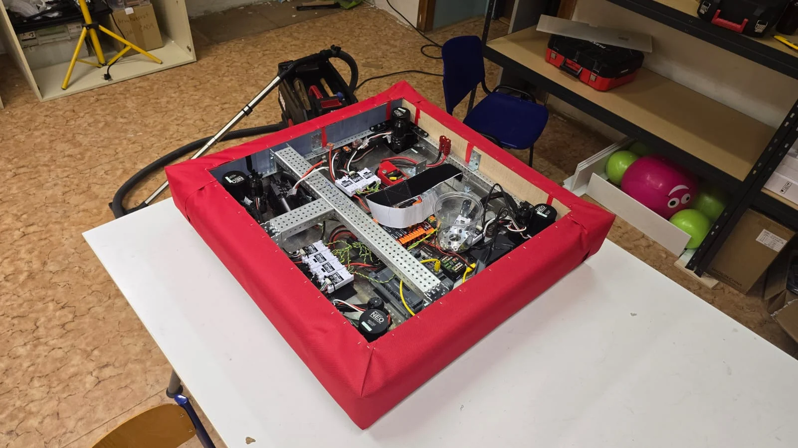
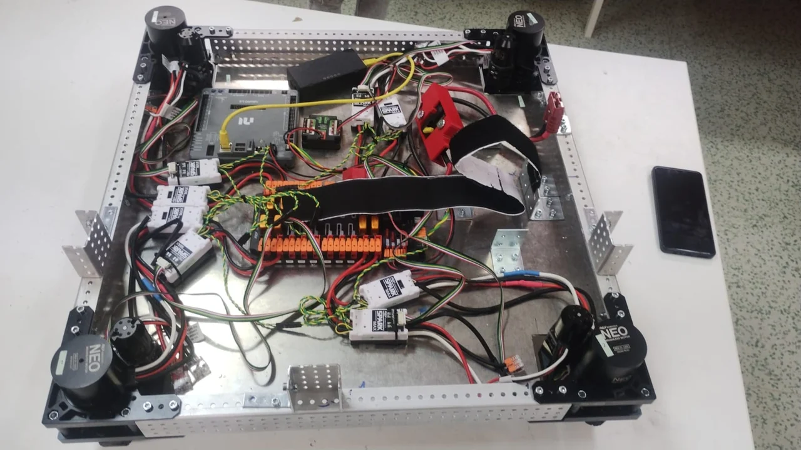
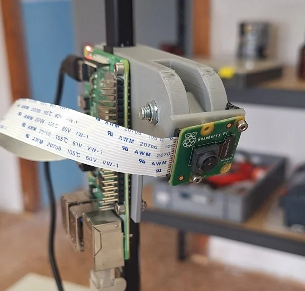
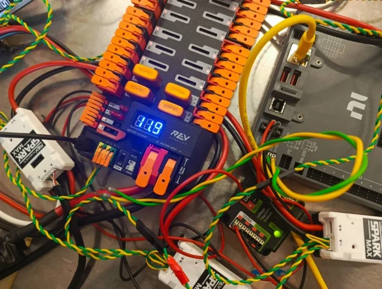
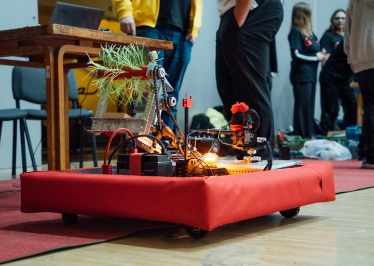
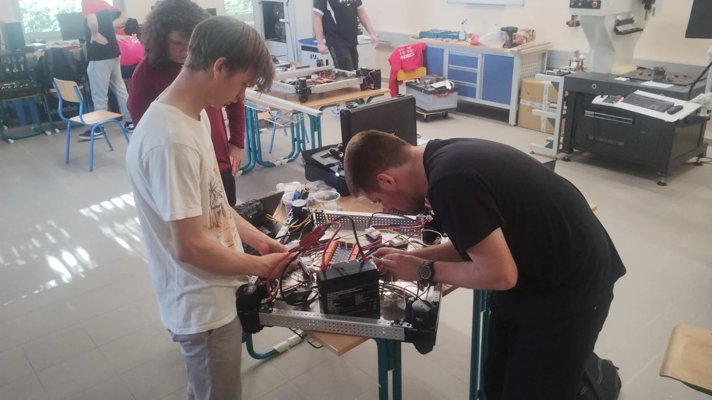
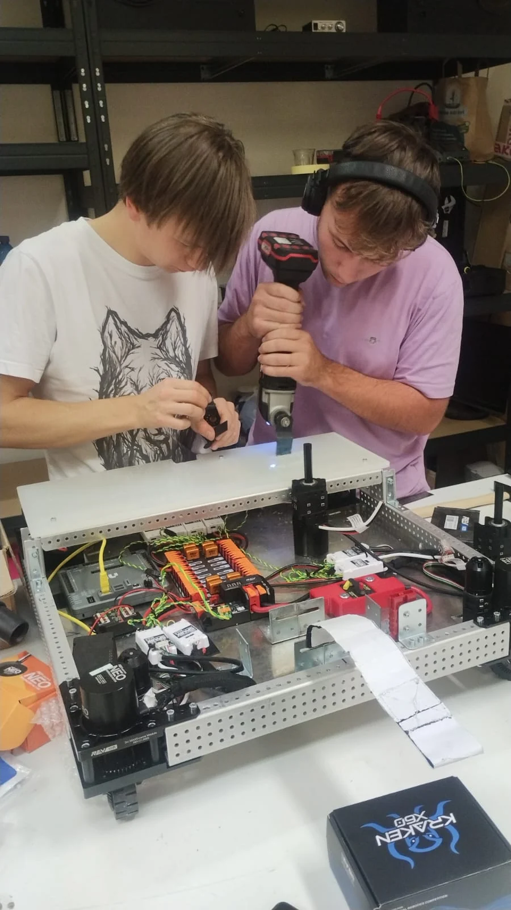

01 / CircuitBreakers
CIRCUIT BREAKERS
Jsme středoškolský tým z Litoměřic. Navrhujeme, stavíme a programujeme soutěžní roboty.
scrolldolů
02 / Kdo jsme
Stavíme soutěžní roboty
CircuitBreakers je středoškolský robotický tým z Litoměřic. Fungujeme jako jeden ze čtyř regionálních týmů projektu RobUL.
V týmu se věnujeme mechanice, elektronice, programování i strategii. Robota průběžně navrhujeme, vyrábíme, testujeme a podle výsledků dál upravujeme.
Členové CircuitBreakers ↗CircuitBreakers = regionální tým v Litoměřicích
RobUL #9585 = výběrový FRC tým pro mezinárodní soutěž

03 / 27. 11. 2025
Regionální robotická soutěž / SLUNETA
Druhé místo
a 16 bodů
Soutěž měla pět disciplín: laser, kroužky, bludiště, pohyblivé předměty a slalom. Robot je plnil manuálně i autonomně a rozhodovala hlavně spolehlivost, přesnost a příprava.
Výsledky a reportáž UJEP ↗TýmBody
CHOBOT26
CIRCUITBREAKERS16
PAPERBOX9
LEDbot4
04 / Robot

Robot / řízení / autonomie
Robot pro sezónu 2025
Robota řídíme v Javě s WPILib. Má swerve pohon, kameru pro detekci QR kódů a autonomní režimy. Kód zahrnuje také telemetrii, PID/PIDF regulaci a bezpečnostní logiku.
- Pohon
- Swerve / YAGSL
- Kamera
- kamera + QR / coprocessor
- Autonomie
- bludiště, navigace, reakce na obraz
- Knihovny
- WPILib, PathPlanner, PhotonLib, CTRE, REV
Náš robot / 2025
Jak robot funguje
Vyber část robota a podívej se na její zapojení.

01 / Pohon
Pohon do všech směrů
Swerve pohon umožňuje natáčet jednotlivé moduly. Robot tak může měnit směr jízdy nezávisle na natočení podvozku. Náš projekt používá knihovnu YAGSL.

02 / Kamera
Kamera a QR kódy
Kamera a koprocesor zpracovávají obraz a detekují QR kódy. Tyto informace používáme při autonomních úlohách a navigaci.

03 / Elektronika
Napájení a řízení
Elektronika propojuje napájení, pohon a senzory. Kód v Javě s WPILib řeší ruční i autonomní režim, telemetrii a bezpečnostní logiku.
Swerve pohon
Každé kolo
zatáčí zvlášť
Šipky určují směr na hřišti, i když je robot otočený. Každý povel naváže na předchozí polohu. Otočení přidá 90° doprava.
Vyber směr nebo otočení. Další povely počkají ve frontě.
- X
- 0
- Y
- 0
- Natočení
- 0°
Ve frontě: 0
Schéma principu swerve pohonu. Nejde o simulaci skutečného výkonu našeho robota.
Detaily robota / 2025

05 / Kód
Kód v Javě
Ve veřejném repozitáři najdeš kalibraci kamery, autonomní průjezd bludištěm, řízení pohybu i bezpečnostní logiku. Je v něm také vidět, co jsme upravovali před soutěží.
github.com/CircuitBreakersTKM RobUL-2025-Local ↗// veřejný snapshot našeho stacku
robot {
drivetrain: "swerve",
control: ["teleop", "auto"],
vision: "camera + QR",
tuning: "PID / PIDF",
telemetry: true,
season: "2025",
competition_ready: true
}06 / V terénu
Práce v dílně
Montáž podvozku a zapojování elektroniky v naší dílně během sezóny 2025.


07 / RobUL
Čtyři města / jeden výběrový tým
Čtyři regionální týmy
v síti RobUL
Od školního roku 2025/2026 funguje RobUL jako síť čtyř regionálních týmů. CircuitBreakers je regionální tým pro Litoměřice. Vybraní členové regionálních týmů mohou být součástí výběrového FRC týmu RobUL #9585.
Jak regionální týmy fungují ↗01CHOBOTChomutov
02PaperBoxŠtětí
03LEDbotÚstí nad Labem
04CircuitBreakersLitoměřice
CircuitBreakers / RobUL #9585 / Denver Regional 2026
Dva členové CircuitBreakers v RobUL #9585
CircuitBreakers na Denver Regional nesoutěžil jako samostatný FRC tým. Dva naši členové byli součástí výběrového týmu RobUL #9585, který dokončil kvalifikaci na 34. místě z 55 a poté nastoupil do vyřazovací části jako součást 7. aliance.
Příběh z Denveru ↗08 / Co dál
Napiš nám
na Instagram
Zajímá tě programování, mechanika, elektronika, CAD nebo strategie? Pokud se chceš přidat, na něco se zeptat nebo se přijít podívat, napiš nám na Instagram. Tam se ti ozveme nejrychleji.